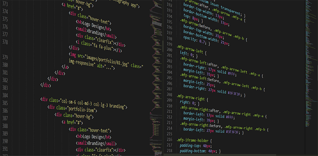

We believe security software like Kicksecure needs to remain Open Source and independent. Would you help sustain and grow the project? Learn more about our 14 year success story and maybe DONATE!
Basic Security Guide IntroductionDocumentationUnicode-showPrevious page: Basic Security Guide IntroductionIndex page: DocumentationNext page: Unicode-showInvisible Malicious Unicode Risks

This wiki page explains the security risk of invisible characters in Unicode that can be copied and pasted into terminal emulators or introduced as vulnerabilities/backdoors in source code contributions, along with documentation that can help to check files and folders for malicious Unicode.
 OOPS!
They tricked me to install MALWARE! Clipboard Hidden Text Attacks
explained
OOPS!
They tricked me to install MALWARE! Clipboard Hidden Text Attacks
explained


Unicode as a Security Risk
There are invisible characters that might be copied that can do malicious actions. This is a security risk for:
- A) For users: Commands copied and pasted into a terminal emulator.
- B) For developers: Introduction of invisible vulnerabilities or backdoors through source code contributions.
These adversarial encodings produce no visual artifacts probably in most editors and terminals.
Note: Not all unicode in files is necessarily malicious. Only some unicode characters in some files are suspicious or potentially malicious.
Original attack research: https://trojansource.codes/
Forum discussion: https://forums.whonix.org/t/detecting-malicious-unicode-in-source-code-and-pull-requests/13754
Searching Files and Folders for Unicode
unicode-show
grep-find-unicode-wrapper
grep-find-unicode-wrapper [1] can help to
check files for unicode.
Syntax for files:
grep-find-unicode-wrapper /path/to/filenameExample for files:
Note: The following example check file ~/.bashrc.
Replace ~/.bashrc with the actual file to check.
grep-find-unicode-wrapper ~/.bashrc
Syntax for folders:
grep-find-unicode-wrapper -r /path/to/folderExample for folders:
Note: The following example check the user's home folder.
Replace ~/ with a different folder if another folder should
be checked.
grep-find-unicode-wrapper -r ~/
Expected output:
- A) If no unicode has been found: None.
- B) If unicode has been found: All lines that include unicode.
Expected exit codes:
- A) If no unicode has been found: non-zero exit code.
- B) If unicode has been found: Exit code
0.
Similarity with grep:
Since grep-find-unicode-wrapper is a wrapper around
grep, output and exit codes are similar to
grep.
stdisplay
stdisplay provides command line
interface (CLI) tools to safely display untrusted text in a
terminal by sanitizing non-ASCII characters (Unicode), ANSI escape
sequences. This can help when inspecting potentially malicious text or
logs.
Use stcatn when you want to view a file safely. Compared
to stcat, stcatn also normalizes output by
ensuring a final newline and trimming trailing whitespace.
Example, dump untrusted file to terminal.
stcatn /path/to/untrusted-file
Example, dump untrusted file and redirect to sanitized file.
stcatn /path/to/untrusted-file > /path/to/sanitized-file
Use stecho when you want to safely print untrusted text
to the terminal and enforce a newline at the end.
Example:
stecho "${untrusted_string}"
stsponge can for example be used to sanitize a file on
disk in-place. Example:
stsponge /path/to/file < /path/to/file
Warning: Shell
Scripting is still a risk. stdisplay only makes
terminal display safer. It does not make shell scripts safe and
it does not prevent dangerous commands from being executed. If untrusted
text is used in a script (for example inserted into a command line, used
as part of a filename, or passed to tools such as bash,
sh, eval, xargs, or command
substitution), it can still lead to command execution or other
unintended effects.
See stdisplay for full documentation.
Resources
- gcc protects from this https://www.phoronix.com/news/GCC-LLVM-Trojan-Source but other compilers and script interpreters don't even have bug reports.
- "31m"?! ANSI Terminal security in 2023 and finding 10 CVEs
- https://www.bleepingcomputer.com/news/security/phishing-attack-hides-javascript-using-invisible-unicode-trick
- https://x.com/aemkei/status/1843756978147078286
- https://embracethered.com/blog/posts/2024/terminal-dillmas-prompt-injection-ansi-sequences/
- https://stacklok.com/blog/silent-but-deadly-how-minders-new-rules-can-help-detect-and-prevent-homoglyph-attacks-in-your-code
- https://github.com/reinderien/mimic
- https://github.com/reinderien/mimic/wiki/Implications
- https://unix.stackexchange.com/questions/73713/how-safe-is-it-to-cat-an-arbitrary-file
- https://unix.stackexchange.com/questions/15101/how-to-avoid-escape-sequence-attacks-in-terminals
- https://www.youtube.com/watch?v=3T2Al3jdY38
- https://daniel.haxx.se/blog/2025/05/16/detecting-malicious-unicode/
- jqwik: https://forums.whonix.org/t/detecting-malicious-unicode-in-source-code-and-pull-requests/13754/35
See Also
Footnotes
Categories: Documentation